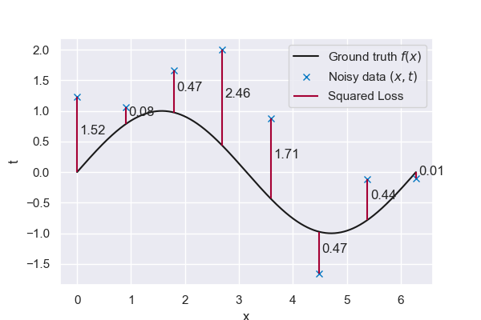

6.2. Decision Theory#
# pip install packages that are not in Pyodide
%pip install ipympl==0.9.3
%pip install seaborn==0.12.2
# Import the necessary libraries
import numpy as np
import matplotlib.pyplot as plt
from sklearn.neighbors import KNeighborsRegressor
from mude_tools import magicplotter, biasvarianceplotter
from mude_tools import magicplotter
from cycler import cycler
import seaborn as sns
%matplotlib widget
# Set the color scheme
sns.set_theme()
colors = [
"#0076C2",
"#EC6842",
"#A50034",
"#009B77",
"#FFB81C",
"#E03C31",
"#6CC24A",
"#EF60A3",
"#0C2340",
"#00B8C8",
"#6F1D77",
]
plt.rcParams["axes.prop_cycle"] = cycler(color=colors)
This page contains interactive python element: click –> Live Code in the top right corner to activate it.
Introduction#
In the previous chapter, we built a k-nearest neighbors model and observed the influence of choosing various values for k. We found that choosing k depends, among other things, on the specific dataset used and the noise in the data. By tweaking k, we could get a model which qualitatively fits our data well.
In this chapter, we will try to quantify how well a specific model performs for any dataset, which can help us choose the best one.
# The true function relating t to x
def f_truth(x, freq=1, **kwargs):
# Return a sine with a frequency of f
return np.sin(x * freq)
# The data generation function
def f_data(epsilon=0.7, N=100, **kwargs):
# Apply a seed if one is given
if "seed" in kwargs:
np.random.seed(kwargs["seed"])
# Get the minimum and maximum
xmin = kwargs.get("xmin", 0)
xmax = kwargs.get("xmax", 2 * np.pi)
# Generate N evenly spaced observation locations
x = np.linspace(xmin, xmax, N)
# Generate N noisy observations (1 at each location)
t = f_truth(x, **kwargs) + np.random.normal(0, epsilon, N)
# Return both the locations and the observations
return x, t
# Define a function that makes a KNN prediction at the given locations, based on the given (x,t) data
def KNN(x, t, x_pred, k=1, **kwargs):
# Convert x and x_pred to a column vector in order for KNeighborsRegresser to work
X = x.reshape(-1, 1)
X_pred = x_pred.reshape(-1, 1)
# Train the KNN based on the given (x,t) data
neigh = KNeighborsRegressor(k)
neigh.fit(X, t)
# Make a prediction at the locations given by x_pred
y = neigh.predict(X_pred)
# Later we require two predictions from a single KNN predictor.
# To prevent training it twice, the option to predict for 2 separate sets is created
if "extra_predictions" in kwargs:
x_pred_extra = kwargs.get("extra_predictions").reshape(-1, 1)
return y, neigh.predict(x_pred_extra)
# Return the predicted values
return y
Loss function#
To quantify the “closeness” between predictions of some model \(y(\mathbf{x})\) and the observed data \(t\), we introduce the squared loss function:
where \(t\) are the observed values corresponding to \(x\). Squaring the difference gives a number of nice properties:
The loss is always positive, regardless of whether we underestimate or overestimate a prediction.
It is differentiable at \(y(\mathbf{x})=t\), which is not true for all loss functions (e.g. the absolute loss)
Below we plot this loss for some data points. Notice that in this case we are comparing the observations \(t\) to the ground truth \(f(\mathbf{x})\) (as opposed to some fitted model). The error therefore comes solely from the noise in our observations.

Fig. 6.24 Ground truth vs noisy data#
Theory#
To obtain our model, we want a single value that tells us how well it explains all the data. Therefore it is natural to compute the expected loss:
where \((y(\mathbf{x})-t)^2\) is the error term we have seen before, and we multiply it with \(p( \mathbf{x},t)\), the probability of this particular point occuring. Integrating this over the complete probability density \(p(\mathbf{x},t)\) results in a single scalar that summarizes our expected prediction error.
Naturally, our goal is to choose a model \(y(\mathbf{x})\) so as to minimize \(\mathbb{E}[L]\). We can do this using calculus of variations:
where we keep the detailed steps of the derivation out of the scope of this discussion. Solving for \(y(\mathbf{x})\) we get:
where the Sum Rule of probability \(p(\mathbf{x}) = \int{p(\mathbf{x},t)dt}\) has been employed and we factorize the joint probability distribution as \(p(\mathbf{x},t) = p(\mathbf{x})p(t\vert\mathbf{x})\) (Product Rule). From the result above, the model that minimizes the squared loss is therefore given by the mean of the conditional distribution \(p(t|\mathbf{x})\). This important result can also be seen graphically for a regression model with a single input:
In practice we generally do not know \(p( \mathbf{x},t)\) or \(p(t|\mathbf{x})\) exactly. Instead, we can estimate the loss for any model by taking the average of the squared losses for each point in our limited dataset. We can then tweak \(y(\mathbf{x})\) to minimize this loss.
This is known as the Mean Squared Error (MSE) function. We now revisit our k-nearest neighbors model with the value of the training loss shown in the plot title.
# Get the observed data
x, t = f_data(N=100)
# Define the prediction locations
x_pred = np.linspace(0, 2 * np.pi, 1000)
# Create the interactive plot including training error
plot1 = magicplotter(f_data, f_truth, KNN, x_pred)
plot1.fig.canvas.toolbar_visible = False
plot1.add_sliders("epsilon", "k", "N", "freq")
plot1.add_buttons("truth", "seed", "reset")
plot1.title = "Mean squared error: {mse_train:.3f}"
plot1.show()
Model selection#
For \(k = 1\) our loss function goes to exactly zero, yet the resulting model will not yield good predictions for unseen data. Our model has fitted the noise in the dataset, and therefore does not generalize well. We say that we have overfitted our model to the training data. Clearly, evaluating the squared loss solely on our training points does not suffice if our goal is to make an informed choice for \(k\).
To solve this problem a validation set is introduced. This set consists of different observations from the process which are not included during training. We also define a test set with samples that can be used at the very end of our model building process in order to assess in an unbiased way if our choice of \(k\) has been well informed. We therefore have three separate loss values:
Training Loss: |
The value of the loss function based on all observations used to train a model |
Validation Loss: |
The value of the loss function based on observations not used during training, used for finding hyperparameters such as \(k\) |
Test Loss: |
The value of the loss function based on observations not used during either training or validation, used for evaluating the fit of the final model (for example to compare to alternative models) |
We repeat the experiment above with an additional validation set for which we compute the validation loss. This validation error represents the error we obtain when making new predictions that were hidden from the model during training and is therefore a much better indication for assessing our model compared to the training error. Minimizing the error on this validation set allows us to find a good value for k.
# Get the observed data
x, t = f_data(N=100)
# Define the prediction locations
x_pred = np.linspace(0, 2 * np.pi, 1000)
# Create the interactive plot including training error
plot2 = magicplotter(f_data, f_truth, KNN, x_pred)
plot2.fig.canvas.toolbar_visible = False
plot2.add_sliders("epsilon", "k", "N", "freq")
plot2.add_buttons("truth", "seed", "reset")
plot2.add_sidebar()
plot2.title = "Training error: {mse_train:.3f}, Validation error: {mse_validation:.3f}"
plot2.show()
Try it out above! How does this compare with your findings from the previous chapter? Note that we now leave 20% of data points out for validation, and that the trained function does not fit them exactly. For a given dataset size, move the \(k\) slider until the validation loss is as low as possible.
Having selected a value for \(k\), we could then compute the loss on our test dataset as one final check of model validity. We leave that step to you when working on our real-world problems later on.
Bias-variance tradeoff#
As we determined earlier, the optimal prediction (in the sense that it minimizes the squared loss function), which we will denote as \(h(\mathbf{x})\), is given by:
Starting from the expression for the loss function you know, we add and subtract the equation above with no loss of generality. This allows us to split the loss expression in two important parts:
Now note that the first term does not depend on \(t\) anymore (remember \(h(x)\) is already an integral over \(t\)). This means we can simplify it to an expectation only over \(\mathbf{x}\). Furthermore, the third term vanishes once we integrate over \(t\). We therefore end up with the following very important decomposition:
The irreducible noise term represents the variance that will always be present in our model because we make noisy observations. Even if we had the perfect model \(h(\mathbf{x})\), we would still have an expected loss greater than zero due to the noise inherent to our data. For the kNN model above, this is a bit hidden because we have exactly one observation for each value of \(x\). This is the reason why we can still obtain zero loss with our kNN estimator, but in practice we would ideally have several observations for the same value of our inputs.
Regardless, focusing now on the first term, we might note that actually, our model \(y(\mathbf{x})\) not only depends on \(\mathbf{x}\) but also on which dataset \(\mathcal{D}\) we used for training. So, the first integral should be replaced as follows:
Now, we do some rearrangement in the inner part of this expression:
and then taking the expectation over all possible datasets we get:
Overall, the expected loss can be decomposed as follows:
MUDE Exam Information
You will not be asked to reproduce this derivation on the exam, but you should be familiar with the meaning of this final result and with the interpretation of each of these important terms.
These terms can be understood as follows:
Bias: Represents the mismatch between the expectaction of our model \(\mathbb{E}_\mathcal{D}\left[y(\mathbf{x},\mathcal{D})\right]\) and the optimal prediction \(h(\mathbf{x})\). An unbiased model will on average give us the optimal prediction, whereas a biased model will on average deviate from the optimal prediction.
Variance: Represents the degree to which a given model \(y(\mathbf{x},\mathcal{D})\) (trained with one specific realization of \(\mathcal{D}\)) deviates from the average model \(\mathbb{E}_\mathcal{D}\left[y(\mathbf{x},\mathcal{D})\right]\). If the variance is large, it means that a new dataset would produce a very different model.
Noise: Represents the inherent variation in our dataset. This term cannot be reduced because it stems from our data and not from our choice of model.
Generally speaking, there is a certain balance to strike between bias and variance. A more flexible model tends to target the optimal prediction \(h(\mathbf{x})\) on average but can be significantly influenced by the dataset to which it is fitted. In other words, it has a lower bias but a higher variance. On the other hand, a less flexible model tends to be less affected by the dataset to which it is fitted, but this causes it to deviate from \(h(\mathbf{x})\). In other words, it has a lower variance but a higher bias. This dilemma is referred to as the bias-variance tradeoff.
Looking back at the plot above, try to answer the following questions:
When k is low, do we have a high or a low bias? And what about the variance?
When k is high, do we have a high or a low bias? And what about the variance?
We will now quantify the bias and variance by creating several datasets and averaging over them, following the equations above. Notice that computing the expressions above is only possible here because we know the ground truth in this example, that is, we know what the perfect model \(h(\mathbf{x})\) should look like.
plot3 = biasvarianceplotter(f_data, f_truth, KNN, x_pred)
plot3.fig.canvas.toolbar_visible = False
plot3.add_sliders("epsilon", "k", "N", "freq")
plot3.add_buttons("seed", "reset", "D_small", "D_medium", "D_large")
plot3.show()
Playing around with the plot#
Understanding bias and variance is critical for any method you use, and this will come back in many of the following lectures. Being able to answer some of the following questions can help you understand what is going on:
Why is the variance small for a large \(k\)?
Answer
With higher values of \(k\), we are averaging over a larger neighborhood. Intuitively, you can imagine that if our noise is high, generating multiple datasets of the same size will result in very different datasets, especially if \(N\) is small. But over larger and larger neighborhoods, it makes sense that this noise we are adding tends to cancel out between points (remember the expected value of our noise is zero). It is therefore more likely that our resulting model will not change all that much for different datasets. This is the definition of a model with low variance (and therefore high bias!).
Why is the bias not exactly zero everywhere when \(k=1\)?
Answer
The bias should be zero at the locations of every one of the \(N\) data points and when we take expectations over an infinite number of datasets. Take a look at what happens with the bias between data point locations and for different numbers of datasets.
Why does the bias increase when choosing a high frequency \(freq\)?
Answer
The complexity of our ground truth increases with frequency. So it makes sense that we would then need a more complex model to capture it properly. This in turn means models with the same \(k\) will likely show an increase in bias. Note that this is not the case for \(k=1\).
TIP: When playing with the plot, be aware that training the model with \(2000\) different datasets might take a while! When moving the sliders set that to a lower number of datasets and only click the ‘2000 datasets’ button when you are done with the sliders.
Final remarks#
So far, we have looked at our k-nearest neighbors regressor, which is relatively easy to understand and play around with. However, this method is not often used in practice, as it scales poorly for large datasets. Furthermore, computing the closest points becomes computationally expensive when considering multiple inputs (high dimensions). In a limited data setting, taking the average of the nearest neighbors will often lead to poor performance. k-nearest neighbors is also sensitive to outliers. In the following chapter, we will apply what we have learned to a different model, namely, linear regression.